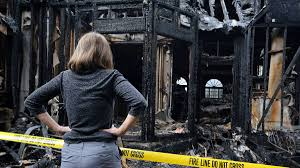

El olor a humo realmente puede irritarle la nariz y abrumar la respiración de su cuerpo, especialmente si su casa sufrió un incendio. Si su casa huele mal, es fácil eliminar el olor usando un desodorante para ambientes. Ir por ramas de eucalipto naturales y secas colocadas dentro de una maceta o jarrón también podría evitar el mal olor.
¿Qué pasa si algo se quema dentro de su casa o una parte de su casa fue arrasada por el fuego?

Seguro que dejará muchos residuos y olores. ¿Podría un spray de desodorante o una maceta de eucalipto traer la magia? Probablemente no.
Lo que es aún peor es que el mal olor del humo dificultará la limpieza y limpieza. Y dado que el uso de aerosoles y técnicas de eliminación de olores más potentes no eliminará el humo de su hogar, lo más práctico que usted y otros propietarios deben hacer es contratar expertos que puedan realizar la limpieza de incendios. Sabiendo que eliminar el olor a humo no deseado a menudo está más allá de su habilidad o incluso de la de su personal de mantenimiento más confiable, siga lo que sugieren la mayoría de las compañías de seguros: contrate Expertos en Limpieza Post Incendios.
Pero si el fuego solo afectó una pequeña parte de su hogar, probablemente su cocina o dormitorio, y si no hay ningún daño estructural en absoluto, solo unos pocos hollines y un olor horrible a humo, su reclamación al seguro se limitará solo al humo y hollín, podría desanimarlo a contratar un equipo de Limpieza de Incendios.
Con esto, solo tiene dos opciones: o contrata a alguien y paga por su servicio a su cargo o hace el trabajo usted mismo.
Si decide hacer el trabajo en su casa, estas son las cosas que podría necesitar para una limpieza de daños causados por el humo de bricolaje:
• Aspiradora. Elija una unidad que pueda manejar superficies húmedas y secas.
• Esponjas limpiadoras secas. Elija esponjas que estén hechas especialmente para limpiar el hollín. Están disponibles en tiendas de limpieza y suministros de pintura y también puede encontrar uno en proveedores de arte, ya que también son excelentes para limpiar pinturas y otras obras de arte.
• Fosfato trisódico (TSP). Esto es químico, aunque cáustico, funciona como un agente de limpieza para todo de uso que limpia fácilmente la grasa y el hollín. Los limpiadores de pino también son efectivos y son menos cáusticos que el TSP, pero su uso requiere más tiempo antes de que aparezcan los efectos.
• Cubeta. Su balde debe tener al menos 5 litros para que pueda mezclar TSP y otros limpiadores correctamente.
• Esponjas, trapos y fregona. Los usará para sanear y limpiar superficies duras y manchadas.
• Guantes de goma. Use guantes de goma mientras mezcla limpiadores y limpia las superficies para evitar la irritación de la piel. Los aceites de sus dedos pueden causar más daños en las superficies con las que tiene contacto, especialmente cuando se mezclan con hollín. Por lo tanto, usar guantes de goma hará que su trabajo sea más fácil y efectivo.
• Aspirador con accesorio de borde. Este equipo es ideal para manchas y hollín en esquinas y grietas difíciles de alcanzar.
Dado que la mayoría de los daños causados por el humo son generalizados y afectan a un área enorme de su casa, puede solicitar la ayuda de expertos profesionales en limpieza de incendios. Tienen mejores equipos, habilidades y experiencia que usted, lo que podría ahorrarle tiempo y dinero a largo plazo. Si una gran parte de su casa es arrasada por el fuego y solo se puede canjear cuando un equipo experto de profesionales interviene para hacer el trabajo, no lo piense dos veces. Póngase en contacto con una Empresa de Limpieza de Incendios de mayor confianza ahora y deje que su experiencia salve su hogar de un mayor abandono.
Para obtener más información, visite https://limpiezaincendiosnanonex.es y encuentre más formas de mantener su hogar libre de moho, daños y peligros que podrían resultar peligrosos para su hogar y su salud.
- Limpieza Post Incendio Málaga
- Limpieza Post Incendio Barcelona
- Limpieza Post Incendio Asturias
- Limpieza Post Incendio Ciudad Real
- Limpieza Post Incendio Alicante
- Limpieza Post Incendio Madrid
- Limpieza Post Incendio Valencia
- Limpieza Post Incendio Albacete
- Limpieza Post Incendio Hospitalet
- Limpieza Post Incendio Cádiz
- Limpieza de Diógenes Madrid
- Limpieza de Incendios Valencia
- Limpieza de Incendios Barcelona
- Limpieza de Incendios Ciudad Real
- Limpieza de Incendios Elche
- Limpieza de Incendios Cartagena
- Limpieza de Incendios Madrid
- Limpieza de Incendios Canarias
- Limpiezas Traumáticas Barcelona
Limpieza Post Incendio Málaga